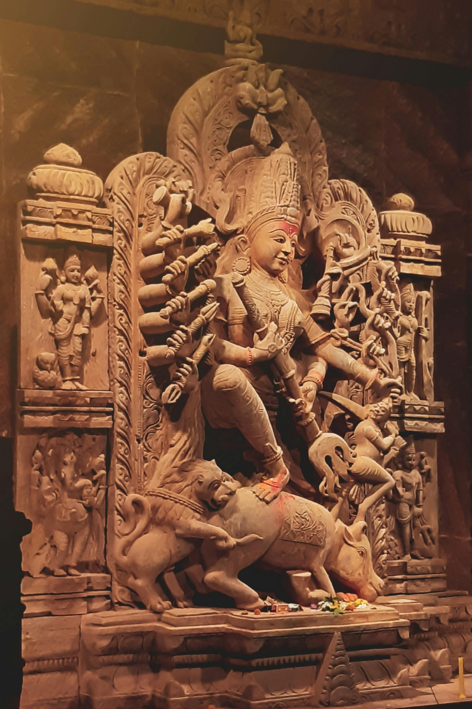
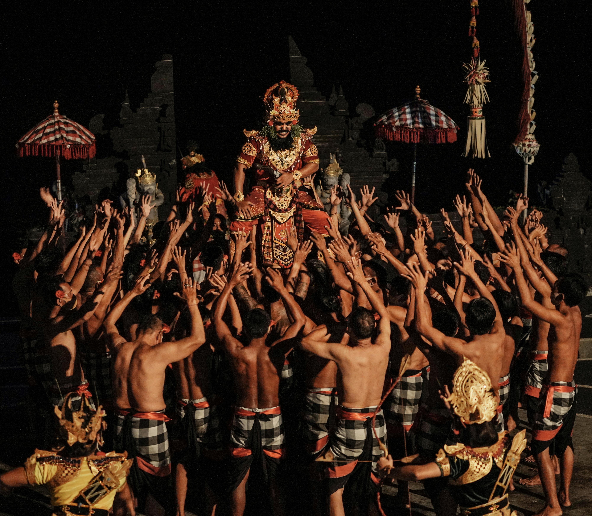

halo teman teman apa kalian tertarik untuk berlibur di pulau bali yuk ikuti kami
sejarah pulau bali
Masa prasejarah Bali pada dasarnya sama dengan masa prasejarah Indonesia secara keseluruhan. Masa ini meliputi tingkat-tingkat kehidupan berburu dan mengumpulkan makanan (baik yang tingkat sederhana maupun tingkat lanjut), masa bercocok tanam, dan masa perundagian atau kemahiran teknik.
Masa prasejarah Bali merupakan awal dari sejarah masyarakat Bali, yang ditandai oleh kehidupan masyarakat pada masa itu yang belum mengenal tulisan. Walaupun pada zaman prasejarah ini belum dikenal tulisan untuk menuliskan riwayat kehidupannya, tetapi berbagai bukti tentang kehidupan pada masyarakat pada masa itu dapat pula menuturkan kembali keadaanya Zaman prasejarah berlangsung dalam kurun waktu yang cukup panjang, maka bukti-bukti yang telah ditemukan hingga sekarang sudah tentu tidak dapat memenuhi segala harapan kita.
Berkat penelitian yang tekun dan terampil dari para ahli asing khususnya bangsa Belanda dan putra-putra Indonesia maka perkembangan masa prasejarah di Bali semakin terang. Perhatian terhadap kekunaan di Bali pertama-tama diberikan oleh seorang naturalis bernama Georg Eberhard Rumpf, yang menyebutkan keberadaan nekara Pejeng dalam bukunya Amboinsche Rariteitkamer (1705). Sebagai pionir dalam penelitian kepurbakalaan di Bali adalah W.O.J. Nieuwenkamp yang mengunjungi Bali pada tahun 1906 sebagai seorang pelukis. Dia mengadakan perjalanan menjelajahi Bali dan memberikan beberapa catatan antara lain tentang nekara di Pejeng, Trunyan, dan Pura Bukit Penulisan. Perhatian terhadap nekara Pejeng ini dilanjutkan oleh K.C Crucq tahun 1932 yang berhasil menemukan tiga bagian cetakan nekara Pejeng di Pura Banjar Manuaba, Desa Kendran, Tegallalang.
Budaya
Pulau Bali terkenal dengan kekayaan budayanya yang unik dan beragam. Berikut beberapa budaya yang dapat Anda temukan di Bali:
1. Agama dan Kepercayaan:

Hindu Dharma: Mayoritas masyarakat Bali beragama Hindu Dharma. Agama ini mempengaruhi berbagai aspek kehidupan masyarakat Bali, seperti upacara adat, seni, dan arsitektur.
Upacara Adat: Upacara adat merupakan tradisi keagamaan yang dijalankan oleh masyarakat Hindu Bali. Upacara ini bertujuan untuk menjalin hubungan harmonis antara manusia dengan Tuhan, manusia dengan manusia, dan manusia dengan alam. Beberapa upacara adat terkenal di Bali yaitu Melasti, Nyepi, Galungan, dan Ngaben.
Seni dan Tradisi:
Tari Bali

Tari Bali: Tari Bali dikenal akan keindahannya, gerakannya yang dinamis, dan cerita yang disampaikan melalui tarian tersebut. Contoh tari Bali yang terkenal yaitu Tari Kecak, Tari Legong, dan Tari Barong.
Gamelan: Gamelan adalah alat musik tradisional Bali yang terbuat dari logam. Gamelan dimainkan dalam berbagai upacara adat, pertunjukan kesenian, dan acara lainnya.
ukiran
Ukiran: Seni ukir Bali terkenal akan detailnya yang rumit dan motif-motif yang khas. Ukiran ini dapat ditemukan pada berbagai benda, seperti patung, pintu rumah, dan persembahan.
Tenun
Tenun: Tenun ikat Bali terkenal dengan motif dan warnanya yang beragam. Kain tenun ini digunakan untuk berbagai keperluan, seperti pakaian adat, persembahan, dan oleh-oleh.
Destinasi wisata
Bali, "Pulau Dewata," adalah tujuan menawan yang terkenal dengan keindahan alamnya yang menakjubkan, warisan budaya yang kaya, dan tradisi artistik yang semarak. Dari pantai yang menakjubkan dan sawah yang subur hingga kuil-kuil megah dan pertunjukan menawan, Bali menawarkan beragam pengalaman untuk setiap wisatawan. Berikut sekilas tentang beberapa tempat wisata yang wajib dikunjungi di Bali:
1.pantai
Pantai Seminyak: Terkenal dengan resor kelas atas, butik chic, dan kehidupan malam yang semarak, Pantai Seminyak adalah surga bagi mereka yang mencari pengalaman pantai yang mewah dan trendi.
2. Pura Tanah Lot
Pura Tanah Lot: Pura laut ikonik yang bertengger di formasi batuan di tengah ombak ini adalah salah satu landmark Bali yang paling dikenal dan pemandangan menawan saat matahari terbenam.
Sawah
Teras Sawah Tegallalang: Teras sawah yang indah ini, dipahat ke lereng bukit seperti mahakarya seniman, menampilkan keindahan lanskap pertanian tradisional Bali.


 Pantai Seminyak: Terkenal dengan resor kelas atas, butik chic, dan kehidupan malam yang semarak, Pantai Seminyak adalah surga bagi mereka yang mencari pengalaman pantai yang mewah dan trendi.
Pantai Seminyak: Terkenal dengan resor kelas atas, butik chic, dan kehidupan malam yang semarak, Pantai Seminyak adalah surga bagi mereka yang mencari pengalaman pantai yang mewah dan trendi.